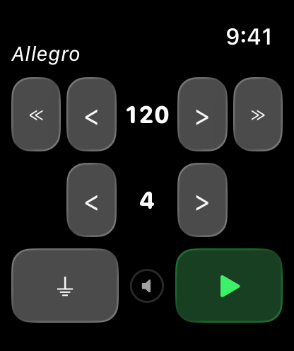
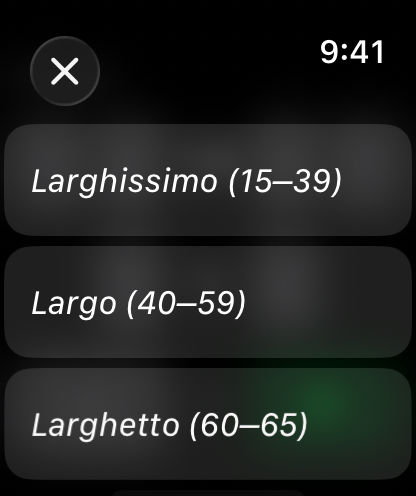

Metronome Watch Special
A simple, precise metronome for Apple Watch. Set BPM from 40 to 240, choose from preset tempos (Largo, Andante, Allegro and more), 1–9 beats per measure with automatic first-beat accent, sound and haptic feedback, Digital Crown volume control. Works with wrist down, no phone needed.
Download

Support
Before you write
A few quick things to try first:
- App not responding? Double-press the Digital Crown to see open apps, then swipe the Metronome card up to close it. Reopen from your app list.
- Sound not playing? Check that the Digital Crown volume is turned up. Also check that your watch is not in silent mode.
- Haptics not working? Make sure the ⏚ button is shown (haptics are on). If you see ⚡︎, tap it to enable haptics. Also check Watch Settings → Sounds & Haptics.
- Metronome drifting or stopping? Background audio requires the app to stay active. Try reopening and starting the metronome again.
Manual


How to use
- Adjust BPM with the < > and ≪ ≫ buttons
- Tap the tempo name (e.g. "Allegro") to pick from a preset list
- Adjust beats per measure with the < > buttons on the second row
- Toggle haptic vibration with the ⏚ button (tap to turn off) or ⚡︎ button (tap to turn on)
- Use the Digital Crown to adjust volume
- Press the green play button to start, red stop button to reset
Tempo Reference
| Tempo | BPM Range | Feel |
|---|---|---|
| Largo | 40 – 59 | Very slow, broad |
| Larghetto | 60 – 65 | Rather slow |
| Adagio | 66 – 75 | Slow and stately |
| Andante | 76 – 99 | Walking pace |
| Andantino | 100 – 109 | Slightly faster than Andante |
| Moderato | 110 – 119 | Moderate |
| Allegro | 120 – 167 | Fast and bright |
| Presto | 168 – 199 | Very fast |
| Prestissimo | 200 – 240 | Extremely fast |
FAQ
- Does it work without my iPhone?
Yes, fully standalone. - Does it work when my wrist is down?
Yes, audio and haptics continue. - Does it collect any data?
No data is collected or shared. - What does the ⏚ button do?
Haptics are currently on. Tap to turn them off. - What does the ⚡︎ button do?
Haptics are currently off. Tap to turn them on. - Can I use just sound or just haptics?
Yes. Turn volume down for haptics only, or disable haptics for sound only. - It sounds like there are two sounds at once. Is this expected?
If your Apple Watch is not in silent mode, the haptic engine may produce an audible click alongside the app's beat sound. Enable silent mode on your watch to hear only the app's audio.
Legal
Privacy Policy
Last Updated: March 2026
Introduction
Welcome to Metronome Watch Special. We are committed to respecting and protecting your privacy. This Privacy Policy outlines the type of information we collect, or in this case, do not collect, and the methods we use to ensure your privacy.
Information We Do Not Collect
Metronome Watch Special is designed on a principle of zero data collection. We do not collect, store, use, share, or transfer any personal data from our users. The app operates entirely on your Apple Watch with no data processed or stored on any server.
Third-Party Services
Metronome Watch Special does not integrate with any third-party services, such as analytics tools, advertising networks, or social media platforms. No data is shared with any third party.
Children's Privacy
Since we do not collect any data, we comply with all relevant regulations related to children's privacy, such as the Children's Online Privacy Protection Act (COPPA).
Changes to This Privacy Policy
We may update our Privacy Policy from time to time. We advise you to review this page periodically for any changes. Changes are effective immediately after they are posted on this page.
Contact Us
If you have any questions or suggestions about our Privacy Policy, do not hesitate to contact us at: support [at] hoshinosoftware [dot] com